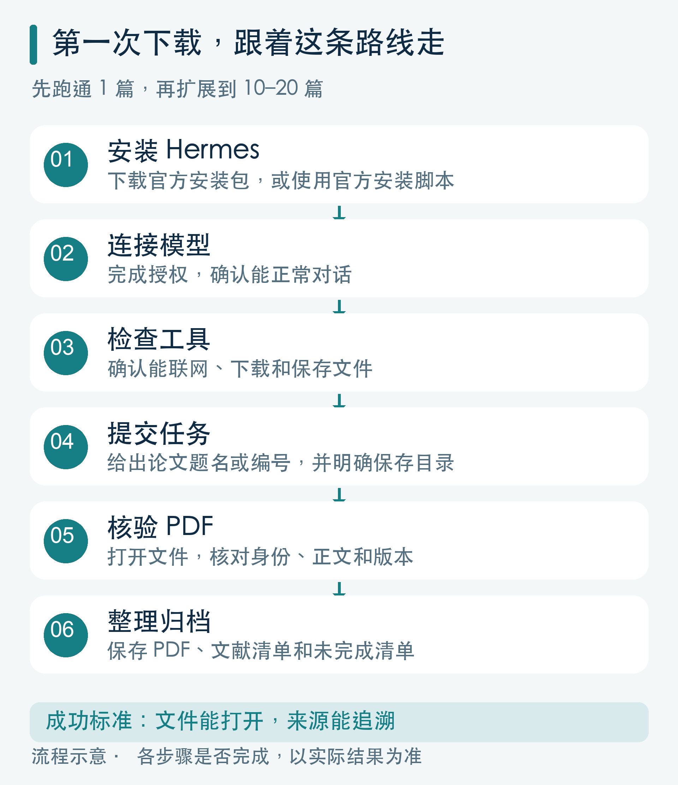
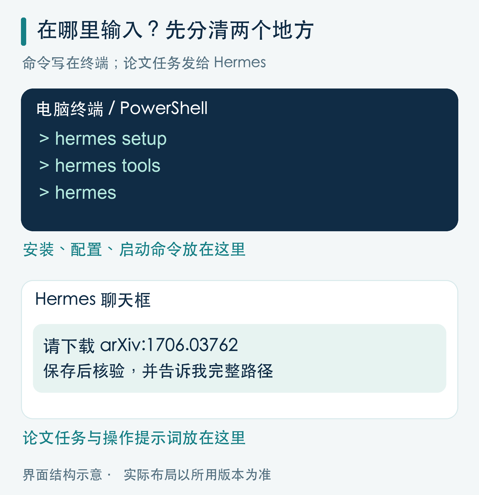
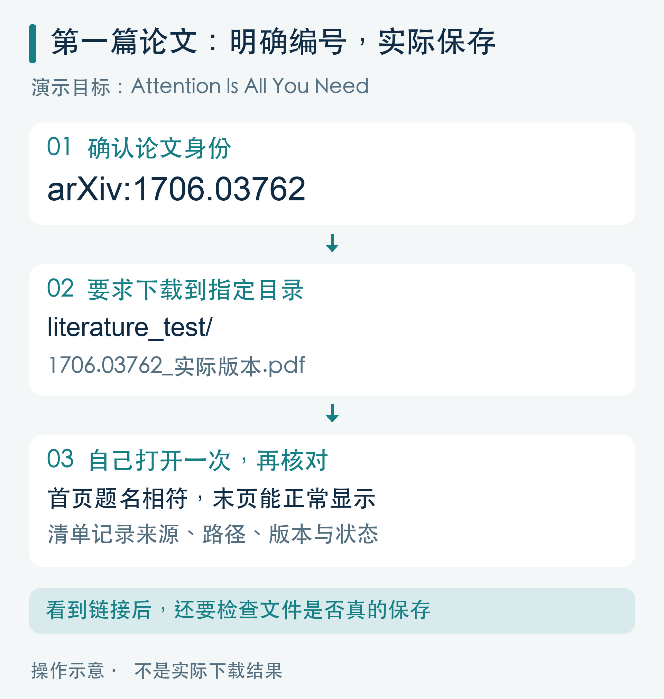
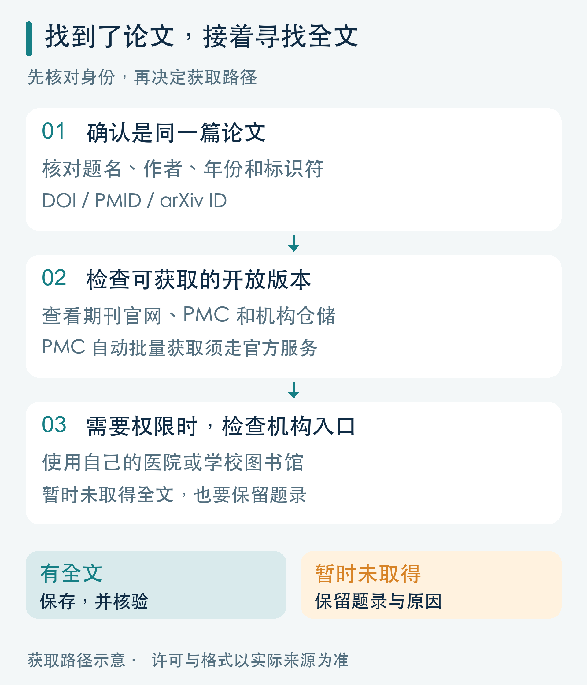
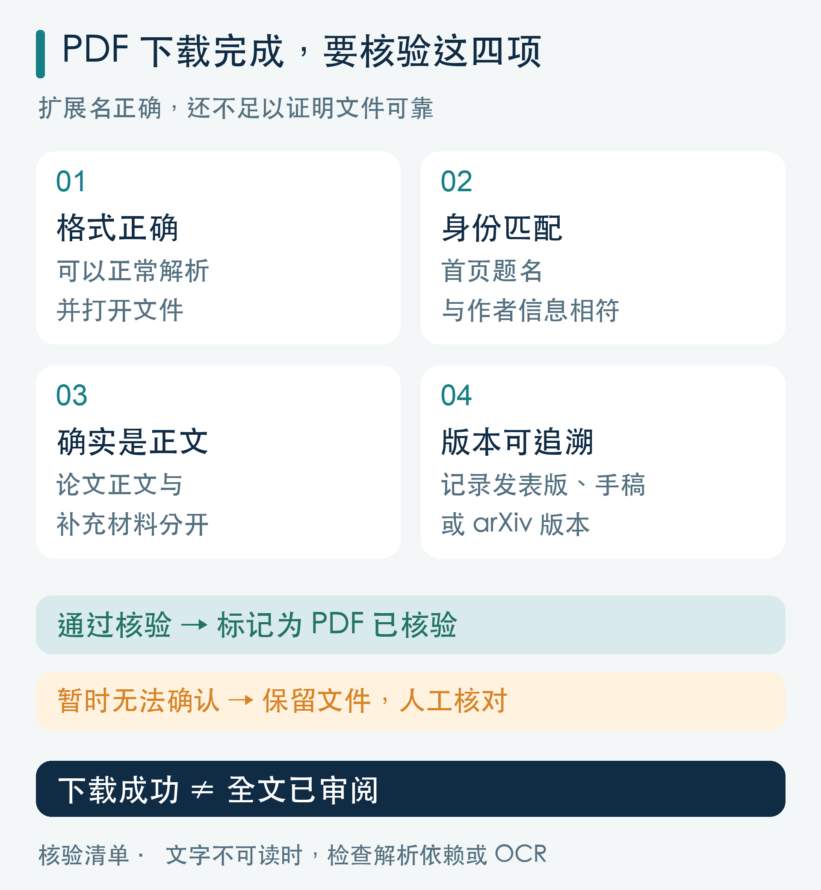
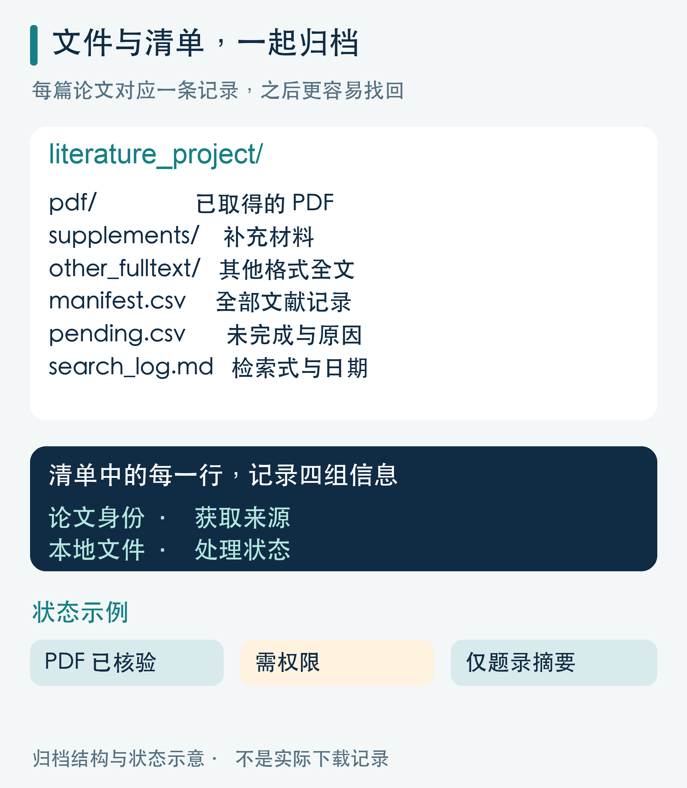
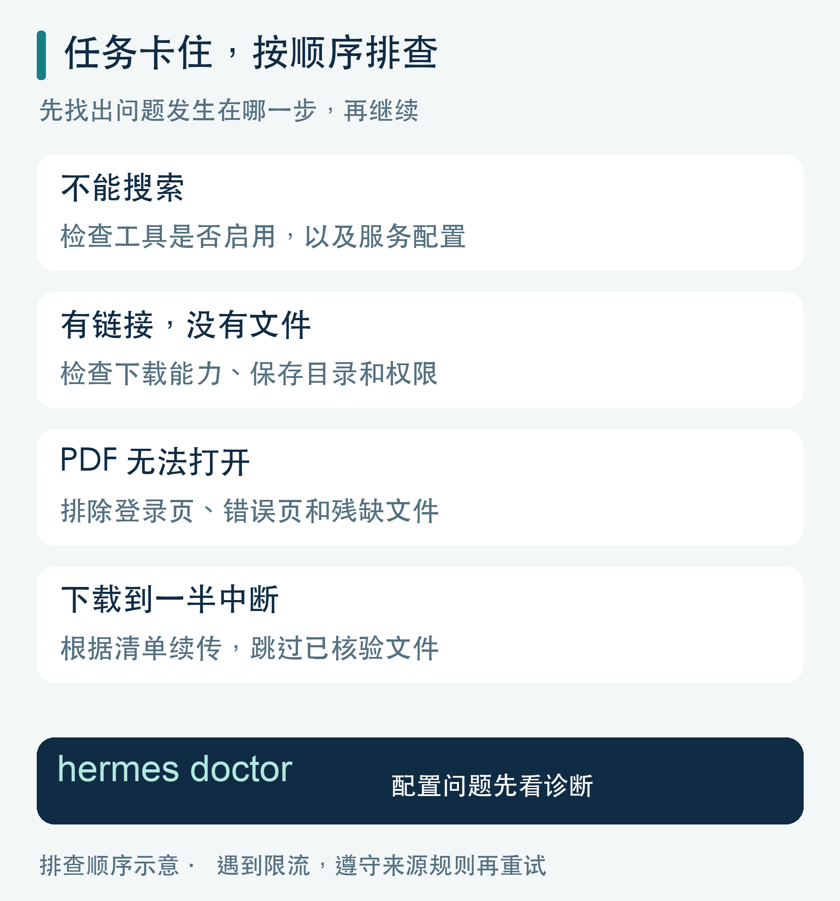

用 Hermes Agent 下载研究文献：从第一篇 PDF 到批量归档的完整攻略
找文献、下全文、改文件名、整理引用，这些重复工作，可以交给 AI 助手串起来做。
准备课题、写综述或制作学术报告时，你可能遇到过这样的场景：论文已经找到了，全文却散落在期刊网站、开放仓储和电脑下载文件夹里；过几天再看，又分不清哪个是正式发表版，哪个是作者手稿。
Hermes Agent 可以帮助我们把这段流程连接起来：检索论文，寻找可获取的全文，把文件保存到指定目录，再整理成可追溯的文献清单。
这篇文章从安装和首次下载讲起，提供单篇获取、清单下载、主题检索三种操作方式，以及可以直接复制给 Hermes 的提示词。
适用工具：Nous Research 的 Hermes Agent。官方文档核对日期：2026 年 10 月 1 日。提示词为工作流模板，实际执行取决于版本、模型、工具配置和文献访问权限。
怎样跟着操作： 先看总流程，再从第二节开始逐步执行。本文的安装与配置命令输入电脑终端或 PowerShell；以“请……”开头的任务提示词输入 Hermes 聊天框。每一步完成后，对照“应该看到的结果”检查，再进入下一步。
配图说明： 封面为 AI 插画；正文七张图均为流程或界面结构示意，不是 Hermes 实际截图或真实下载记录。

图1｜先用一篇论文跑通整条路线，再增加批量。
一、开始之前，先明确要交付什么
Hermes Agent 具备网页搜索、浏览器操作、终端执行和文件读写能力。这些能力可以组合成文献获取流程，但仍需要配置可用的模型和工具。官方工具说明
建议把一次任务的交付物设为三个：
- 全文文件夹：保存已取得的 PDF，或明确标注格式的其他全文。
- 文献清单：记录题名、作者、标识符、来源和本地文件位置。
- 未完成清单：记录哪些文献需要权限、哪些下载失败、哪些只有摘要。
验收时，重点看文件和清单能否对应。找到一个链接、网页上读到摘要，都不能算作“PDF 已下载”。
全文来源也要分清：
| 入口 | 适合承担的工作 |
|---|---|
| arXiv | 查找相关领域论文，获取对应版本 |
| PubMed | 检索医学文献，核对题录和全文入口 |
| PMC | 查找医学全文，按许可和官方服务获取 |
| 期刊官网、机构仓储 | 查找发表版或作者手稿 |
| 医院、学校图书馆 | 获取机构订阅范围内的文献 |
其中，PubMed 的检索结果主要是题录和摘要；全文通常来自 PMC、出版社或其他外部来源。机构订阅也是一种获取途径。PubMed 全文获取说明
二、安装 Hermes，并检查三个条件

图2｜安装和配置用终端；下载任务与提示词发给 Hermes。图中界面为结构示意。
1. 选择安装方式
不熟悉终端的读者，可以先到 Hermes 官网 选择桌面安装包。下载前核对电脑系统、处理器和安装包要求；不同安装方式的支持范围并不完全相同。平台支持说明
如果使用命令行，官方提供以下安装方式。命令应输入电脑的终端或 PowerShell。
macOS、Linux、WSL2：
curl -fsSL https://hermes-agent.nousresearch.com/install.sh | bash
Windows 原生 PowerShell：
iex (irm https://hermes-agent.nousresearch.com/install.ps1)
安装后重新打开终端，再进行配置。官方安装指南
2. 配置模型
在终端输入：
hermes setup
按照向导选择模型服务并完成授权。已有配置、只想调整模型时，可以使用：
hermes model
如果选择 Nous Portal，可以按官方说明使用 hermes setup --portal。模型和配套工具的额度、计费，以实际服务方案为准。官方快速入门
3. 检查工具和保存位置
在终端输入：
hermes tools
确认网页搜索、终端和文件操作可用；需要点击页面或处理动态网站时，再启用浏览器。网页搜索的服务选择和相关配置，也可以在这里完成。网页搜索配置说明
然后打开 Hermes 桌面聊天，或在终端输入 hermes，发送：
请检查你是否能完成文献获取任务：
- 报告当前模型、网页搜索、终端和文件读写是否可用。
- 告诉我你运行在本机、容器还是远程服务器。
- 在当前工作目录新建 literature_test 文件夹，写入一个测试文本并重新读取。
- 返回该文件的完整路径；如果文件在远程环境，说明我怎样取回。
- 只操作新建的测试文件夹。
这一步确认三个条件：** 能对话、能联网、能保存并重新读取文件。**
照做后应该看到： Hermes 报告工具可用情况，返回测试文件的完整路径，并能重新读出刚才写入的内容。若文件在远程环境，它还应说明取回方法。
如果使用云端或远程环境，文件可能保存在服务器上。请先弄清下载到哪里，再开始批量任务。
三、第一次操作：先下载一篇确定的论文
首次练习建议使用有明确标识符和全文入口的论文。例如，arXiv 上的《Attention Is All You Need》，编号为 1706.03762。论文页面

图3｜给出明确编号，要求实际保存，再自己打开核对。图中路径为操作示例。
把下面整段复制到 Hermes 聊天框：
请获取 arXiv:1706.03762，题名应为 Attention Is All You Need。
先确认当前工作目录和可写位置，在其中建立 literature_test。
从 arXiv 官方页面核对题名、作者和当前版本，获取 PDF。
使用终端下载能力把 PDF 实际保存到 literature_test；仅提取网页文字不算下载完成。
文件名包含 arXiv 编号和实际版本号。
保存后检查文件是否为可解析的 PDF，并核对首页题名。
写入 manifest.csv，记录编号、题名、版本、来源链接、本地路径、文件大小、页数和核验状态。
最后报告文件完整路径及核验结果；失败时说明原因，不要标记为成功。
运行后，自己打开一次文件，确认首页和末页能正常显示。
照做后应该看到： 目标目录中出现论文 PDF 和 manifest.csv。打开 PDF 后，首页题名与目标相符；清单能够找到这份文件的来源、路径、版本与核验状态。
没有看到这些结果时： 直接告诉 Hermes 缺少哪一项，让它继续定位问题。不要仅凭一句“已完成”进入批量任务。
这一篇跑通之后，再扩展到十篇或二十篇。 这样更容易分辨问题出在网络、权限、下载还是文件保存环节。
找到 PDF 链接后，为什么仍可能下不下来？
浏览网页和保存文件属于不同能力。官方浏览器文档列出了文件下载限制，因此不能假定所有浏览器后端都能直接把 PDF 保存下来。浏览器操作说明
可以继续告诉 Hermes：
你已经找到全文入口。请检查当前浏览器后端是否支持文件下载。
对允许直接获取的 PDF，使用终端下载工具保存到指定目录。
如果请求依赖登录状态或下载权限，说明缺少什么条件，保留记录，不要反复请求。
arXiv 技能是否必须安装？
可以先查看已有技能：
hermes skills list
如果没有 arXiv 技能，官方指南提供了安装命令：
hermes skills install official/research/arxiv
安装后开启新会话，让技能生效。技能使用指南
官方 arXiv 技能支持按关键词、作者、分类或编号检索论文。使用检索技能后，仍要明确要求把文件保存并核验。官方 arXiv 技能
四、已有题名、DOI 或 PMID，怎样获取全文？

图4｜先核对论文身份，再检查开放版本和机构获取入口。
如果已经拿到导师推荐清单或文章参考文献，优先使用明确标识符定位论文，再核对题名、作者和年份。
可以直接发送：
请定位并获取下面这篇论文的全文：
题名：【填写题名】
DOI 或 PMID：【如有则填写】
作者、年份：【可选】
保存目录：【填写你希望使用的目录】先核对论文身份，再寻找期刊官网、开放仓储或其他已授权来源。
如果有多个版本，记录各自版本信息，优先获取与我的用途相符的版本。
取得 PDF 后保存并核验；如果只有 HTML 全文，单独记录格式。
如果没有获取到全文，保留题录、来源链接和失败原因。
无法核实的字段留空，不要补写 DOI 或页码。
按 DOI 寻找开放版本时，也可以让 Hermes 查询 Unpaywall 的开放获取位置，并区分链接指向 PDF 还是文章页面。Unpaywall 数据格式说明
如果全文需要机构权限，先通过自己的图书馆入口处理登录或下载。把已获取的文件交给 Hermes，后续仍可继续核验和归档。
批量清单怎么交给 Hermes？
准备一个表格，尽量包含：
title,doi,pmid,year
字段可以不齐全，但每行至少提供一个能定位论文的信息。
第一次练习： 资料包提供 papers_example.csv，用前面同一篇 arXiv 论文演示清单输入。把文件放入 Hermes 的工作目录，先要求它报告文件行数并核对题录；下面的提示词把 papers.csv 替换为 papers_example.csv 即可。之后，再换成你自己的文献清单。
字段可以不齐全，但每行至少提供一个能定位论文的信息。把文件放入工作目录，复制下面的提示词，并替换文件名：
请读取当前目录中的 papers.csv，先核对题录并去重，再尝试获取全文。
优先按 DOI 或 PMID 识别重复条目；缺少标识符时，结合题名、作者和年份核对。
不要把同一研究的不同论文直接合并；预印本与发表版记录关联关系。
第一批处理最多 20 篇，遵守各来源的访问规则。
保存到 literature_batch/pdf，并逐篇核验。
全部条目写入 manifest.csv；未取得全文的条目另列 pending.csv，说明原因。
本轮只请求全文获取和归档，不生成研究结论。
最后核对输入条数、重复条数、实际处理条数、成功数和待处理数。
照做后应该看到： manifest.csv 中保留全部输入记录和处理状态，实际取得的 PDF 能与清单对应。未取得全文的记录出现在 pending.csv，且说明具体原因。
五、只有研究主题，怎样检索并下载？
“帮我找一些相关文献”很难得到稳定结果。更有效的任务描述，要说清楚：
研究问题、时间范围、研究类型、数据库和本轮数量。
以再生障碍性贫血领域为例，可以先让 Hermes 制定检索方案：
我要收集 2019 年 1 月 1 日至 2026 年 10 月 1 日，关于艾曲泊帕用于获得性再生障碍性贫血的临床研究。
优先检索 PubMed，区分初治与难治患者、成人与儿童、单药与联合治疗。
研究类型优先随机对照试验和前瞻性研究，综述单独列出。
请先给出检索式和筛选标准，并说明是否需要补充主题词、同义词或其他数据库。
此轮只制定方案，不下载文件。
核对方案后，再发送：
请按刚才的方案执行检索，先提供最多 20 篇候选文献。
每篇列出题名、年份、研究类型、相关人群、DOI/PMID、来源链接和纳入理由。
元数据核验与初筛完成后，尝试获取可下载全文，并记录获取状态。
保存实际检索式、检索日期和筛选理由。
没有取得全文的文献仍保留在清单中。
日常选题或备课可以先做小批量检索。正式系统综述需要覆盖完整检索范围、记录筛选过程；“优先找 20 篇”只能作为起步任务。
也不要因为某篇论文暂时无法下载，就把它从候选证据中删除。
六、医学文献批量获取，特别注意 PMC 的入口
PMC 可以在线阅读全文，但不同文章的许可和可获取格式有所差别。批量自动获取应使用官方允许的服务，并核对文章许可。
目前 PMC 开发者文档列出的自动获取途径包括 Cloud Service、OAI-PMH、E-Utilities 和 BioC API；不能把逐页抓取 PMC 网页当作批量全文下载方案。PMC 开发者说明
截至本文核对日期，PMC 文献数据集分发服务已完成调整，旧版 FTP 和云端数据集文件已被移除。遇到旧教程中的路径失效，应查看当前的 Cloud Service 文档。PMC 当前数据集获取说明
可以把这段要求加入医学下载任务：
涉及 PMC 内容时，请先查看当前官方开发者和数据集文档，使用允许的自动获取服务。
核对许可、版本和可获取格式，不逐页批量抓取网站。
如果取得的是 XML 或其他全文格式，按真实格式保存，不改后缀伪装成 PDF。
如果当前服务不提供所需 PDF，记录状态和人工获取入口。
arXiv 也有接口访问限制：其传统 API 要求单连接，请求间隔至少三秒。让 Hermes 按来源规则控制请求，遇到限流再延迟重试。arXiv API 使用条款
七、下载完成后，怎样判断文件可靠？

图5｜检查格式、身份、正文和版本，确认文件能用于后续阅读。
一个文件名以 .pdf 结尾，并不代表下载成功。登录页、错误页、补充材料，也可能被误存成“论文 PDF”。
建议给 Hermes 增加四项核验：
- 格式正确：检查实际文件内容，确认可以作为 PDF 解析。
- 身份匹配：核对首页题名、作者及可获得的标识符。
- 正文匹配：确认是目标论文正文，补充材料单独保存。
- 版本可追溯：记录发表版、作者手稿或 arXiv 版本等信息。
可以发送：
请核验 literature_batch/pdf 中的全部文件，并更新 manifest.csv。
检查格式、页数、题名匹配、正文与补充材料、版本信息和重复文件。
不要只凭扩展名、文件大小或 HTTP 成功状态判断下载完成。
将结果标为“PDF 已保存并核验”“PDF 已保存待人工核验”或“文件异常”。
暂时无法读取文字的 PDF 单独标记，并说明可能的原因。
保留异常文件及记录，不要覆盖正常文件。
遇到扫描版，文字提取可能为空。Hermes 的文档提取说明指出，扫描页需要进一步通过页面图像或 OCR 处理；解析依赖不可用时，也可能无法读取 PDF。文档提取说明
下载成功、文字可读和全文已审阅，是三个不同状态。 只有摘要或部分页面可读时，后续摘要也应说明依据范围。
八、让文献文件夹以后仍然找得到、用得上

图6｜每篇论文对应一条记录，文件和来源一起保存。
建议让 Hermes 建立这样的目录：
literature_project/
├── pdf/
├── supplements/
├── other_fulltext/
├── manifest.csv
├── pending.csv
├── references.ris
└── search_log.md
这是建议的归档结构，可以根据实际需要调整。
文件名建议采用：
年份_第一作者_简短题名_标识符或版本.pdf
完整题名放在清单里，文件名避免过长；补充材料增加 supplement 标识。
清单至少记录四组信息：
| 信息组 | 建议字段 |
|---|---|
| 论文身份 | 题名、作者、年份、期刊、DOI/PMID/arXiv ID |
| 获取来源 | 来源页面、实际下载地址、获取日期 |
| 本地文件 | 路径、格式、版本、文件大小、页数 |
| 处理状态 | 获取状态、核验结果、失败原因 |
建议使用能看出差别的状态：** PDF 已核验、PDF 待核验、其他格式全文、仅题录摘要、需权限、下载失败。**
引用管理方面，可以保留数据库导出的题录。PubMed 支持通过“Send to → Citation Manager”导出 .nbib 文件。PubMed 题录导出说明
使用 Zotero 时，可以导入受支持的引用文件，也可以通过 DOI、PMID 等标识符添加条目，再关联本地 PDF。Zotero 官方操作说明
让 Hermes 生成 RIS 或 BibTeX 时，要求它基于核实过的元数据填写，并抽查导入后的题名、作者、年份和 DOI。
九、常见问题，照这张表排查

图7｜从出问题的环节开始检查，已核验文件可以跳过。
| 遇到的问题 | 下一步 |
|---|---|
| Hermes 能聊天，却不能搜索 | 检查网页搜索工具是否启用，以及服务配置是否可用 |
| 找到了全文链接，文件没保存 | 检查下载能力、目标目录和权限，要求返回实际路径 |
| PDF 打不开 | 检查是否误存了登录页、错误页，或文件未下载完整 |
| 显示需要登录或付费 | 保留题录，检查开放版本和机构获取入口 |
| 文件保存了，电脑里找不到 | 确认运行环境，检查容器、服务器或远程工作目录 |
| 批量任务中断 | 根据清单续传，跳过已经保存并核验的条目 |
| PDF 能打开，AI 却读不到 | 检查解析依赖和文字层，必要时进行 OCR |
| 看似下载很多，实际都是同一篇 | 核对 DOI、版本和文件哈希，重新检查去重记录 |
配置问题可在终端运行 hermes doctor，根据诊断结果处理。官方排错说明
第一次使用，就从一篇确定的论文开始：** 定位、保存、打开、核验、记录来源。** 跑通后，再用同一套规则处理文献清单。
当每个文件都有来源、每篇论文都有状态，Hermes 才能帮你减少重复劳动，而这批资料也更容易被用于后续阅读、写作和学术报告。